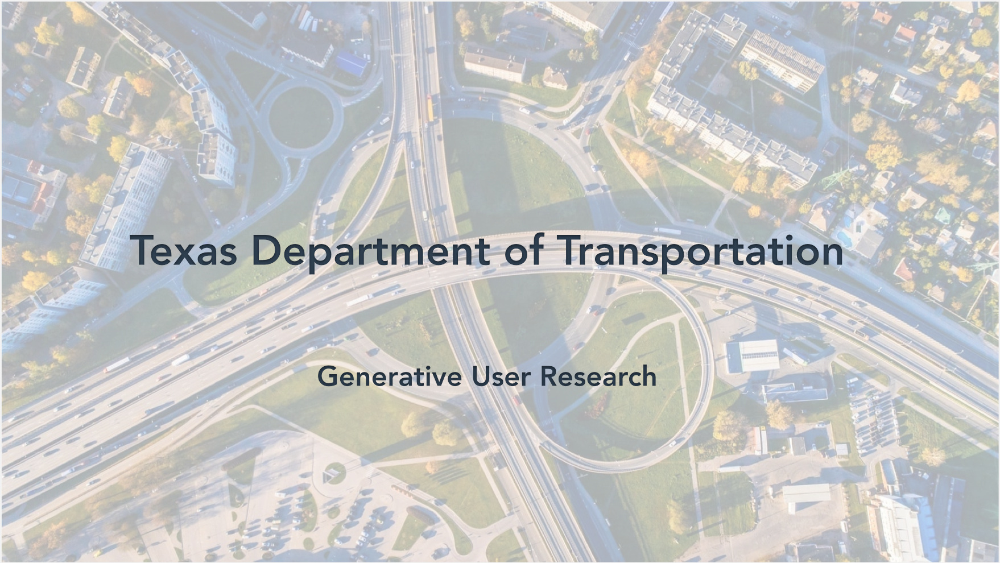
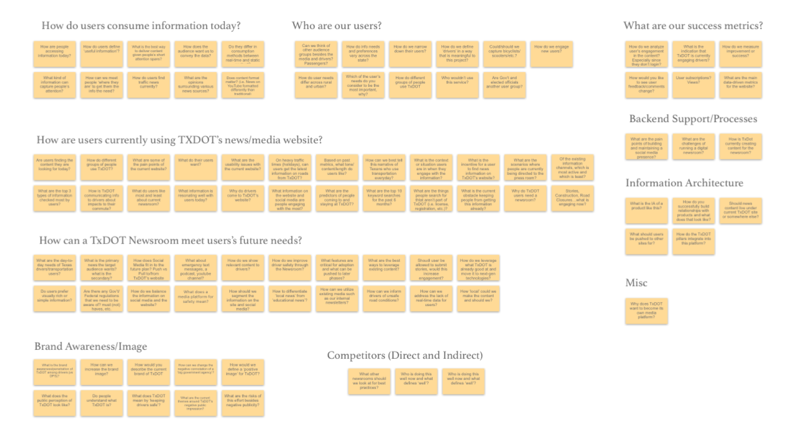
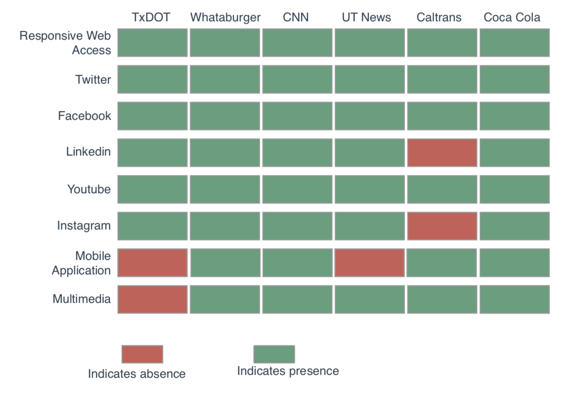
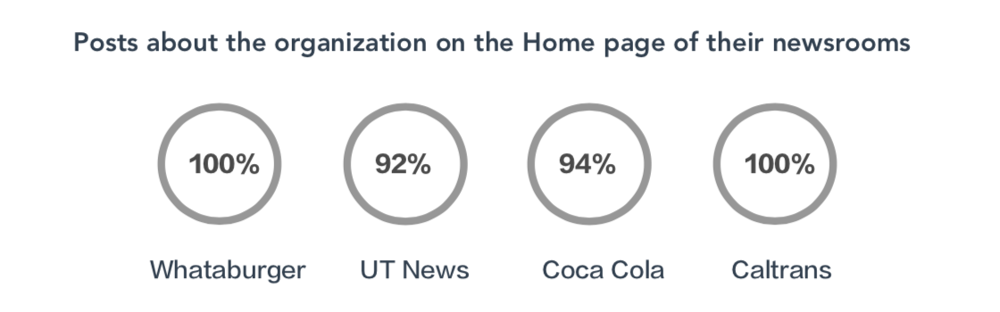
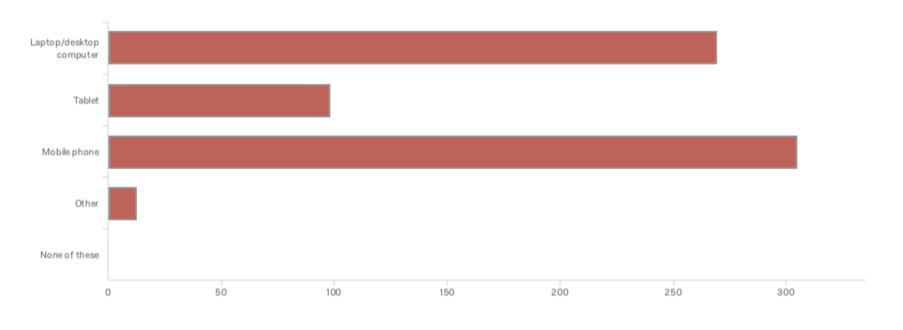
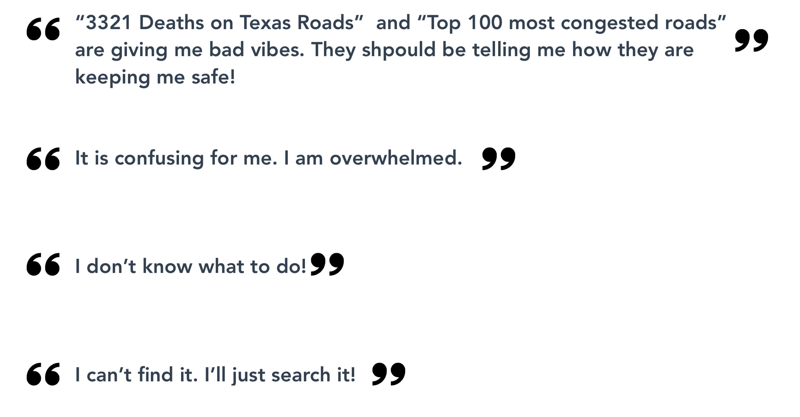
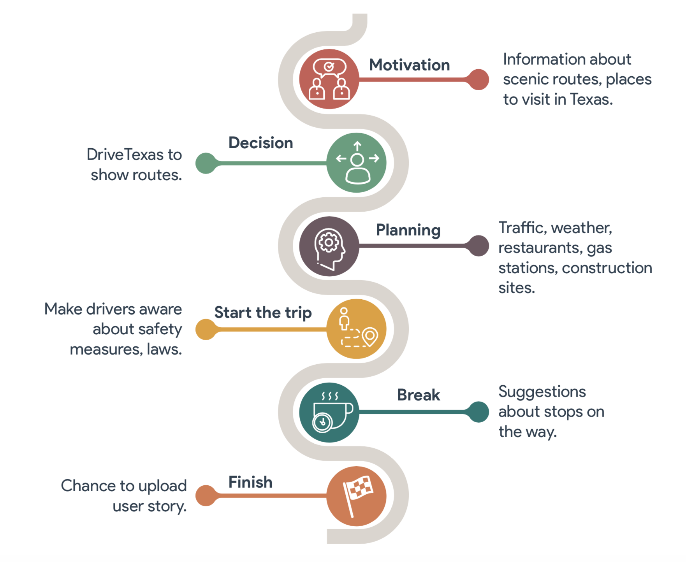

Problem Space
Texas Department Of Transportation, aka TxDOT, wanted to have their own independent online newsroom so as to be capable of regulating the message that is being sent out to the public. Currently, main consumers are the media personnels whereas TxDOT wanted to engage more drivers as their mission is to keep them safe. However, they were uncertain about their target audience and their news consumption habits.
Process
This is the process that I followed for this generative user research:
Problem Space
Texas Department Of Transportation, aka TxDOT, wanted to have their own independent online newsroom so as to be capable of regulating the message that is being sent out to the public. Currently, main consumers are the media personnels whereas TxDOT wanted to engage more drivers as their mission is to keep them safe. However, they were uncertain about their target audience and their news consumption habits.

Objective
To provide recommendations to TxDOT in order to increase their brand awareness and push relevant information effectively.
I found the following questions most pressing during the Client Kicoff:
- Who are the users?
- How users consume information?
- How to increase brand awareness?
Literature Review and Research
1. Studied TxDOT’s Website Analysis and Evaluation Report by Design for Use (July 2010).
2. Studied material suggested by Prof Amelia Acker, the social media expert at UT’s School of Information.
3. Met Jb A Bird, Director of Media Relations and Digital Newsroom Editor at University of Texas at Austin to know about UT News Practices.
Key Findings
1. Insights from Website Analysis and Evaluation Report by Design for Use
Various usability issues which are still valid are:
-The current visual design is text-heavy and there are screen resolution issues.
-Users come to txdot.gov with specific tasks they want to accomplish. The TxDOT website has a wealth of helpful information, and due to its comprehensive size, it is not always easy for users to navigate.
Helped in the identification of different user profiles:
- Driver who travels for personal needs
- Driver who evacuates in the time of a natural disaster - Driver who drives for commercial purposes
These user profiles were screened before conducting interviews in this research. This is discussed later in the report.
2. Trends in News Consumption
-36% of online news consumers often get news from news organizations.
-Two-thirds of Americans (67%) get at least some news on social media.
-Online radio listening in cars, such as listening to AM/FM stations online or streaming other online audio, continues its steady increase.
-Use of mobile devices for news continues to grow.
-Many people get their news on Facebook rather than from
news publishers’ websites. It enhances user engagement even more by letting them comment and share theirstories.
-Podcast listeners in America have substantially increased over the past
3. Jb Bird’s advices for TxDOT summarized:
-Media engagement is essential for survival.
-Website is used as a repository for all the news articles.
Stories need to be pushed through social media and press releases.
-People are most interested in news. News articles can never and should never be replaced by user stories.
- Overall ‘shares’ on social media can be accounted as a success metric and should be strived for.
- Balance brand posts and hard facts.
- Handling social media needs to be prioritised and hence TxDOT must hire more if need be.
-Dissipating information instantly -through texts, emails etc- helps in increasing user engagement.
Competitive Analysis
I assessed the strengths and weaknesses of current direct and indirect competitor newsrooms. This analysis provided me with context to identify prevalent practices and opportunity areas for TxDOT to target.


Key Findings
The key findings from the competitive analysis were:
-TxDOT is doing a fair job posting content on different social media to show its presence.
-TxDOT uses text heavy data on its website, whereas its competitors make extensive use of different multimedia.
-TxDOT does not have a mobile application which marks as a crucial opportunity area.
- Website severely lacks posts which speak about TxDOT. Brand association with the work that TxDOT does is poor. Whereas competitors like Whataburger had all the posts on their home page which were directly or very closely related to Whataburger.
Quantitative Analysis
To substantiate the answers for the following questions:
-What information do they consume from TxDOT?
-What do the users think of TxDOT?
-What information do they expect from TxDOT?
-What are their news consumption habits?
I did the following to generate numerical facts:
-Analysed data from Google trends.
-Conducted a survey and analyzed data from 300+ responses.
Google Trends Data
Google Trends is a website by Google that analyzes the popularity of top search queries in Google Search across various regions and languages. The website uses graphs to compare the search volume of different queries over time.
The following graph shows the search query “Texas Department of Transportation” on Google in Texas over the past 12 months.
TxDOT was most searched during the time period between Jan 14 and Jan 20 2018. On researching further for the cause of this surge, I found out that it was due to inclement weather in Texas during that time.
On running the same analysis for California Department of Transportation, I discovered similar trends.
Key Finding
This proves that people only look up TxDot only when they have a specific purpose in mind.
Survey
An online survey was conducted to find out the following about Texas Drivers:
- Driving habits
- Usage of different media for accessing information - Preference of type of content
- Perception of TxDOT
- Expectations from TxDOT
The survey generated 311 responses in total. Out of the total respondents 70% were females and 30% were males
Key Finding
1. When asked which electronic device do they use regulary, the most popular answer was Mobile Phone.

2. When asked about their perception of TxDOT, mixed responses were received.
3. When asked what information would they be interested in reading about TxDOT, the following responses were received.
Qualitative Research
To dive deeper and measure an objective reality that exists externally from the researcher, I conducted qualitative research with my classmates.
1. Together we interviewed 11 people and asked them about their news consumption and driving habits and their thoughts on TxDOT.
2. Made them navigate through TxDOT’s website and observed them.
Users' responses while navigating through:

Key Finding
Created a journey map to realized their habits deeply and search for oppo!unity areas which can be leveraged.

- Although people want to know about construction projects but 7 out of 11 people we interviewed never check that online before planning any trip. They believe word of mouth for it. This maybe because of absence of easily accessible source maybe because they don’t care enough for it.
- The website’s architecture and visual elements make it difficult for the users to navigate through the website.
- People don’t understand what TxDOT does even after visiting their website.
Recommendations
1. People want to know what TxDot does.
TxDot should tell positive stories of what it does and how it contributes to the
society. Few pressing topics could be: Fund utilizations, Current and Future Projects and their timeline, how it is different thatn TxDPS and DMV.
2. Make TxDOT’s website more usable and include more multimedia elements.
-Use of media other than text.
-The search function should be highlighted.
-Inclusion of Quick Links and FAQs based on web analytics result.
-Use of less technical jargons.
-Menu choices ahould be minimized.
3.Leverage DriveTexas and make a holistic web application for TxDOT.
- Use of mobile devices for news consumption continues to grow.
-The app can serve all the demands of users on the go.
- Traffic, Weather,
Roadways Projects.
-People want to know about road construction but they don’t usually look for it
before starting a road trip. This gap can be bridged.
4. Media should not be replaced.
Media engagement is essdential for survival of a successful media center so TxDOT should be media friendly.
5. Leverage Social Media and prioritize Facebook.
TxDOT is doing a fair job at posting information on social media platforms. If it wants to leverage it more content can be made more tailored to people’s needs as discussed earlier.
Even though TxDOT does a lot of things similar to its competitors, people only visit txdot for specific reasons. It s not wrong to say that there is no urgency for a comprehensive newsroom.
If TxDOT is in a situation where it has to prioritize between different social media platforms, it should opt Facebook as users comment and share more stories on it than any other platform.
6. Utilize radio as a medium.
Radio is the only medium which hasn’t seen substantial decline in the users, TxDOT can push its stories through radio.
7. Launch a podcast.
Another trending way to push stories is through podcasts. After adopting above solutions, TxDOT can try launching podcasts if it is feasible for the media center team.